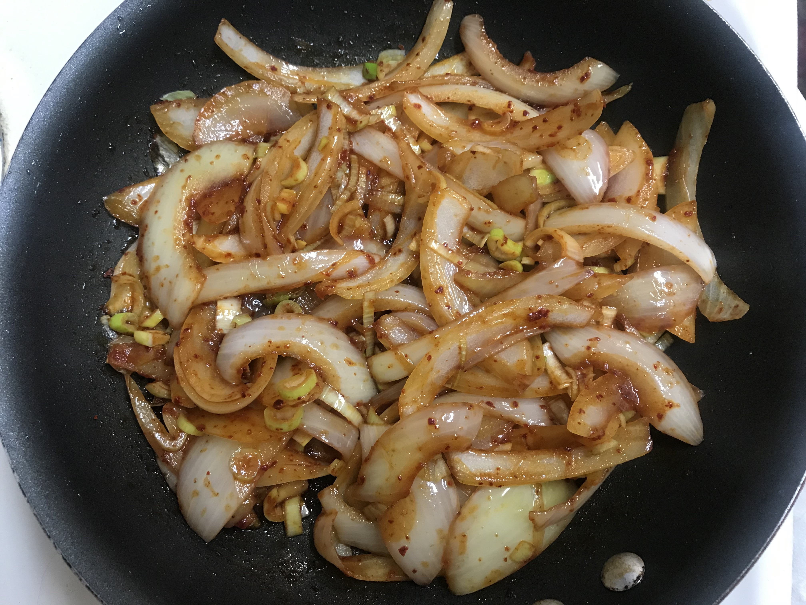
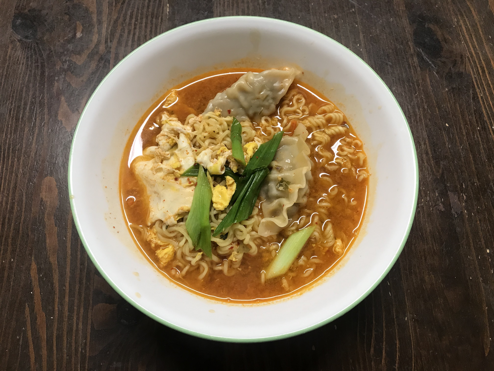
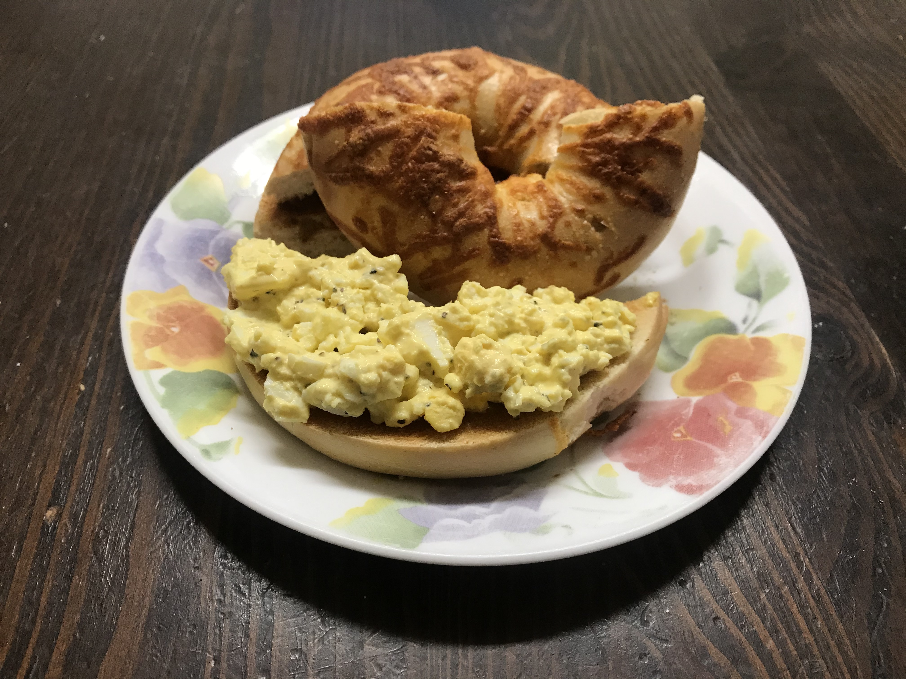

Onion Stir-Fry
Ready in just 10 minutes
DIRECTIONS
- Mix soy sauce 2Tbs, starch syrup 1Tbs, and red pepper 1Tbs together.
- Slice onion to the desired thickness.
- Heat oil in a skillet and add onion.
- Stir onion for about 3 minutes.
- Add the sauce, green onions and cook for another 3 minutes.
- The food is ready to serve.

DIRECTIONS
- Pour 550 ml of water and bring to a boil.
- When the water boils, add flake and soup base.
- Add ramen noodles, egg and dumplings for better taste. Boil for 3 minutes.
- Add sliced green onions.
- Enjoy delicious Korean ramen!

DIRECTIONS
- Boil, cool and peel eggs.
- Place eggs in a bowl and mash.
- Add mayonnaise, salt and pepper to taste.
- Place the bagel into the toaster oven for minutes.
- Cut the bagel in half.
- Put the egg salad on the bagel.
